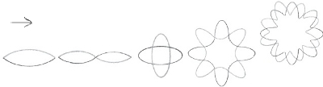
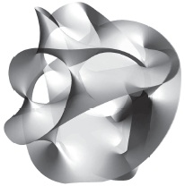

Evrenimizi yaratan titreşimler
Eh, hayır. Sicim kuramı aslında bir araya gelmiş esnek enerji bantlarının oluşturduğu elastiki ilmeklerden kurulu bir evrenden bahseder. Fakat en azından bir fizikçinin ortaya koyduğu üzere, lastik bant kuramı gibi bir isim kulağa biraz hafif gelmektedir; nihayet evreni anlama konusunda en büyük umudumuz olan bir kuramın da bir parça ağırlık taşıması yerinde görünmektedir.
Sicim kuramı yeni, ultramodern bir fikir olarak reklam edilmiş olabilir; fakat öyle değildir. İlk kez 1968’de savaş sonrası dönemde parçacık fiziğine yakayı kaptırmamızın bir sonucu olarak ortaya çıkmıştır. Atom çekirdeğini ancak 1911’de keşfettik. Atomu bölmeyi 1938’de öğrendik, bunu izleyen 20 yıl içinde de nükleer fizik hakkında öğrenilmesi gereken ne varsa öğrenmiş bulunuyorduk. Bundan 10 yıl sonra, bu yeni ufukları evrenin tamamını kapsayacak şekilde genişletme yönünde cüretkâr bir girişim olan sicim kuramı doğdu.
Doğdu; çünkü Gabriele Veneziano adında bir İtalyan fizikçisi gençliğini protonları yüksek enerjilerde ezen deneylerin sonuçları üzerine kafa yorarak geçirmişti. Nihayetinde Veneziano bu verilerde bir örüntü görmeye başlamıştı: İki protonun çarpışması, enkaz alanından belli türde parçacıkların tahmin edilebilir açılarla fırlatılmasına yol açıyordu. Bu çarpışmaların ilk ürünleri kuarklar, protonları oluşturan parçacıklardı. Gelgelelim kuarklar bu çarpışmanın hemen ardından birleşerek farklı türde parçacıklar oluşturuyorlardı. Bu parçacıkların çoğu istikrarsız ve kısa ömürlüydü. Veneziano fizikçilerin dikkatini bu parçacıkların oluşumunun öngörülebilirliğine çektiğinde, aralarından birkaç fizikçi parçaları bir araya getirip bir açıklama oluşturmaya çalıştı. Bu fizikçiler, parçacıkların minicik madde noktacıkları olduğu fikrini unutup onları değişik uzunluklarda sicimler olarak resmettiğinizde, sonuçların anlamlı geldiğini söylüyorlardı. Parçacıkların taşıdığı enerji titreşmelerine yol açıyordu; parçacıklar enerji kazanıp kaybederken bu sicimler de uzayıp kısalıyordu. Titreşen sicimler çarpıştığında, sonuçta ortaya çıkan titreşim yelpazesi, farklı türde atomaltı parçacıklar olarak yorumladığımız şeylerin ortaya çıkmasına yol açmaktadır. Şimdi etkileyici görünüyor; ama o zamanlar kimse bunu hemen galip gelecek bir “her şeyin kuramı” gibi görüvermemişti. Aslına bakarsanız, sicim kuramını ortaya atanlardan birinin makalesi biraz önemsiz olduğu gerekçesiyle reddedilmişti. Fakat o zamanlar makalede önemli sorunlar vardı.

Sorunların Büyümesi
Doğada parçacıklar (kabaca) iki ayrı türe ayrılabilir. Örneğin foton kuvvet aktarır, helyum atomunun çekirdeği, elektron ya da kuark maddeyi oluşturur. Maddeyi oluşturan parçacıklara “fermiyon” denir. “Bozonlar” ise kuvvet aktaran parçacıklardır. Sicim kuramı bozonlar açısından kuralları koyuyordu, fakat fermiyonların varlığı ya da davranışları hakkında söyleyecek bir şeyi yoktu. Fermiyonlar maddenin temel bileşenlerini açıkladığından, bu büyük bir kusurdu. Fakat tek kusur da değildi.
Fizikçiler sicim kuramını ciddiye alacaklarsa kuramı 20. yüzyılda fiziğin iki temel direğiyle, kuantum kuramı ve görelilik kuramıyla tutarlı hale getirmeleri gerekiyordu. Sicim kuramcılarının bunu halledebilmelerinin tek yolu 25 uzay boyutu içeren bir evren hayal etmek, bir yandan da hiçbir zaman durdurulamayacak parçacıkların ve ışıktan daha hızlı hareket eden parçacıkların varlığını kabul etmek oldu.
Bunların hepsini bir anda yutmak zordu, birkaç yıl boyunca sicim kuramı ihmal edilmiş bir halde, hiç kullanılmadan kaldı. Sicim kuramının nükleer fiziğin güçlü etkileşimi olarak bilinen, kuarkları bir araya getirip proton ve nötron oluşturmaları sağlayan kuvveti açıklamanın bir aracı olmayı amaçlamasının da bir faydası olmadı. Sicim kuramı atıl bir halde bir kenarda dururken bugün “standart parçacık fiziği modeli” olarak bilinen şey ortaya çıktı. Standart model atomaltı parçacıklar hakkında bildiğimiz her şeyi birbirine bağlayıp düzgün bir paket haline getiriyordu. Sicim kuramı, biraz aptalca değilse bile fazlasıyla eksik görünüyordu.
Peki, nasıl oldu da sicim kuramı fizikçilerin dualarına bir cevap haline geldi? Ağır işin büyük bir bölümü 1970’te Pierre Ramond adında Fransız bir fizikçi tarafından gerçekleştirildi. Ramon fermiyonlara yol açan sicim titreşimlerini buldu. Bunun hediyesi, ışıktan hızlı parçacıklara duyulan ihtiyacın ortadan kalkması ve ihtiyaç duyulan fazladan boyut sayısının dokuza inmesi oldu. Sicim kuramı artık “süpersicim kuramı” haline gelmişti ve çok şükür ki kuantum kuramı ve görelilikle de tutarlıydı. Halledilmesi gereken bir tek kusur bulunuyordu: Sicim kuramcılarının hareket etmeyi hiç kesmeyen bazı parçacıklar bulunduğu yolundaki iddiası.
Bu meselenin çözümünün, gerçekten de önemli bir çözüm olduğu anlaşıldı. Sicim kuramının hızla pırıltılı bir biçimde şöhret kazanmasının gerisinde kuramdaki durdurulamaz parçacıkların, fizikçilerin uzunca bir süredir temel bir kuram çerçevesinde yaratmayı umduğu parçacıklar olduğunun keşfedilmesi yatıyordu: bunlardan biri kuantum ışık parçacığı foton, diğeri ve en heyecan vericisi de kuantum kütleçekim parçacığı gravitondu.
Kütleçekimin Geldiği Yer
Foton için kuramsal bir haklı çıkarma bulunmasına iyi bir haber dersek sicim kuramının gravitonla ilgili keşfinin fizikçilerin hayallerini süslediğini söyleyebiliriz. 1930’larda kuantum kuramının başlangıcından bu yana fizikçiler kütleçekim ile diğer kuvvetlerin nerede buluştuğunu bulmayı istemişti. Cevap, muhtemelen bu kuramda buluştuklarıydı.
Doğadaki çeşitli kuvvetler –çekirdekte faaliyet gösteren güçlü ve zayıf kuvvetler ile yüklü parçacıklar arasında faaliyet gösteren elektromanyetik kuvvet– öyle görünüyor ki kütleçekim kuvvetinden farklı bir niteliğe sahiptir. Kütleçekim farklı kurallara göre işler. Örneğin elektromanyetizma çekip iterken kütleçekim yalnızca çeker. Nihayetinde fizikçiler bu benzersizliği açıklamayı amaçlıyorlardı. Ve öyle görünüyordu ki sicim kuramı da bunu yapabiliyordu.
Sicim kuramında sicimlerin uçları bir parçacık ve onun karşı parçacığıyla, örneğin bir elektron ve bir pozitronla ilişkilidir. Sicimin titreşimi bu yüklü çift arasında faaliyet gösteren kuvveti taşır. Bir sicim ikiye bölünebilir ya da başka bir sicimle çarpışabilir. Bütün bunların sonucunda kapanıp bir ilmek oluşturan sicimler ortaya çıkar. Bu sicim ilmeğiyle ilişkilendirilen bir yük yoktur, yalnızca kütleçekim olarak bildiğimiz kuvvetin niteliklerine uygun düşen bir kuvvet vardır.
Sicim kuramının kütleçekimi barındırdığının fark edilmesi sayılamayacak kadar çok fizikçinin kafasında ampullerin yanmasına yol açtı. Bütün bu süre zarfında onlar sicim kuramına nükleer etkileşimleri betimleyecek bir araç olarak bakmışlardı, ama aslında ellerinde bir kuantum kütleçekim kuramı vardı; büyük bir birleşik kuram, her şeyin kuramı. Neredeyse bir gece içinde sicim kuramı fiziğin yeni büyük umudu haline geldi. Gelgelelim bu umut uzunca bir zamandır ertelenmiştir. Sicim kuramı Einstein’ın başladığı işi bitirmeye hazırmış gibi göründüğünde yıl 1984’tü. Neredeyse 30 yıl önce. Peki, vaat edilmiş nihai kuram nerede? Öyle anlaşılıyor ki bu çok tartışmalı bir sorudur.
Nihai Bir Kuram mı?
Nihai bir kurama ihtiyacımız olduğuna hiç kimsenin kuşkusu yoktur. Kuantum mekaniği ve görelilik arasında hiçbir tutarlılık yoktur; o kadar ki bu tutarsızlık saçma denilecek derecededir. Örneğin fizik kanunları, evrende farklı biçimlerde hareket etmekte olan kuantum parçacıkları açısından farklıdır. Durmakta olan bir elektrona getirilen kuantum tanımı, elektronun ışık hızına yakın bir hızla hareket ediyor olması halindeki tanımından farklıdır. Albert Einstein görelilik kuramını tam da bu tür sorunlardan kaçınmak için inşa etmiştir.
Görelilik, başka bir yönden bakılıp kuantum merceğinden izlendiğinde bir anlam ifade etmez. Örneğin kuantum hesaplamaları zamana ve mesafeye atıfta bulunmaksızın yapılabilir; fakat görelilik zaman veya uzaya ihtiyaç göstermeyen hiçbir şeyle uyum sağlayamaz. Olası kuvveti bakımından değerlendirildiğinde, sicim kuramı bütün bu sorunları aşabilir. Fakat henüz aşmamıştır; en azından bir kuram olarak ezici bir cazibeye ulaşacak derecede aşmamıştır. Yeni aşkın-kuram olarak baş tacı edilmeden önce, evrenin gerçekten de sicimlerden oluştuğunu söylememizden önce, kuramın kendi cinlerini fethetmesi gerekiyor. Bunların biri en başından beri bellidir. Üç boyutlu bir uzayda yaşıyoruz; fakat sicim kuramı görelilik ve kuantum kuramıyla tutarlı olabilmek için başta 25 boyuta ihtiyaç duymuştur. Boyut sayısı daha sonra sadece dokuza indirilmiştir, ama hâlâ hiç görülmemiş altı tane boyut vardır. Peki, bu boyutlar nerededir?
Buna verilecek kısa cevap, en azından bizim bakış açımıza göre fazladan boyutların sarılıp sarmalanıp çok küçük bir hale gelmiş, yani “sıkıştırılmış” olmasıdır. Uzaktan görülen bir su hortumunu düşünün. Aslında olduğu gibi üç boyutlu bir nesne gibi değil, tek boyutlu bir çizgi gibi görünür. Sicim kuramcıları fazladan boyutları da böyle düşünmemiz gerektiğini söylüyorlar. Oradadırlar; fakat bizim üç uzamsal boyutumuzu pek etkilemezler.

CALABI-YAU UZAYI
Bu öyle, meseleyi geçiştirmek için ortaya atılmış bir argüman değildir; matematiğe dayanarak ileri sürülmüştür: Fazladan boyutlar sarılıp altı boyutlu bir halka haline; yani Calabi-Yau uzayları olarak bilinen, sayıları bir milyonu aşkın altı boyutlu şekillerden birine dönüştürülebilirler. Bu durum doğal olarak sicim kuramına çok büyük bir esneklik getirmektedir. Örneğin bu Calabi-Yau şekillerinden her biri, tam niteliğini belirleyen bir dizi değişkene sahiptir. Bu değişkenler sıkıştırılan boyutlara farklı nitelikler kazandıracak, görüşe açık olan boyutlar üzerinde de doğrudan etkili olacaklardır.
Bunun sonucu sicim kuramının tek bir evreni değil, her biri biraz farklı özelliklere sahip birçok evreni tanımlaması olmuştur. Dolayısıyla sicim kuramı her şekil ve boyutta birçok evren yaratır; sicim kuramının yararlılığıyla ilgili tartışmaların başladığı yer de tam burasıdır. Tartışma basittir: Bu olası dünyalar çoğulluğunu bir sorun olarak mı yoksa bir fırsat olarak mı göreceğiz?
Herkes İçin Bir Evren
Sicim kuramını eleştirenler, kurama her şeyin kuramı yerine hiçbir şeyin kuramı derler. Bu kurama her şey uymaktadır: Biri çıkıp da olasılıklar arasından bizim evrenimizi seçmenin bir yolunu bulmadığı sürece, sicim kuramı evrenimizin doğasıyla ilgili olarak yanlışlanabilir tahminlerde bulunamaz. O halde bu kuramın gerçekten de hakiki bir bilimsel kuram olduğunu söyleyebilir miyiz? Birçok sicim kuramcısı bu eleştiriye hemen itiraz etmiştir. Sicim kuramı bize bu kadar çok evren veriyorsa bunun sebebi muhtemelen bu kadar çok evren olmasıdır.
Bu argümanda kesinlikle bir haklılık payı vardır. Modern kozmoloji bize evrenin Büyük Patlama sonrasında büyük ihtimalle hızlı bir “şişme” sürecinden geçtiğini söylemektedir. Basitçe ifade edecek olursak evren bir balon gibi şişmiş, boyutları 10 üssü 50 faktör artmıştır; yani 1000 milyar milyar milyar kere büyümüştür; üstelik de yalnızca saniyenin binde birinin bir bölümü içinde.
Kimse bunun neden böyle olması gerektiğini bilmemektedir; fakat kozmosun soru işareti yaratan bazı yönlerine getirilebilecek en iyi açıklama budur. Evren homojendir: Her yerde aynı görünmektedir. Bu tuhaftır; çünkü Büyük Patlama’nın evreni öbür türlü yapmış olması gerekirdi. Fakat bu gizem şişmeyle çözülmektedir: Ömrünün ilk evrelerinde hızlı bir genişleme sürecinden geçen evren homojen bir hal alacaktır.
Şişme ayrıca sicim kuramı için de yararlı bir destek olmuştur. Şişme bir kere olduysa bir daha olmaması için hiçbir sebep yoktur. Uzay-zamanın her parçası aynı kanunlara tabidir; dolayısıyla her parça, kuramsal olarak, bir balon evren üretebilir ve bu balon evren kopup uzaklaşana kadar büyüyebilir. Dolayısıyla her evrenden sayılamayacak kadar çok başka evren doğacak, bunlar şişip ayrılarak bağımsız bir varlık bulacaktır. Her birinin diğerlerinden biraz daha farklı özellikleri olacaktır. Başka bir deyişle fizik kanunları farklı olacaktır; örneğin kütleçekimin bulunmadığı bir evren olabilir ya da 17 farklı tür elektronun bulunduğu bir evren de olabilir. Bu bakış açısına göre evren aslında bir çok-evrendir: Olası her biçimi alan bir evrenler manzarasıdır. Bu evrenler içinde bir yerde bizim evrenimiz vardır.
Şunu söylemek gerekiyor: Bu fikri destekleyecek hiçbir deneysel kanıt yoktur, yalnızca tümdengelimci bir argüman vardır: Kendisini destekleyecek açık bir deneysel kanıt bulunmasa da şişmenin evrenimizin niteliklerine getirilebilecek en iyi açıklama olduğu, dolayısıyla tekrar tekrar uygulanabilir olduğu argümanı. Daha da beteri, yine hiçbir kanıt olmayabilir; en azından filozof Karl Popper’ın ileri sürdüğü bilimsel olarak yanlışlama koşulları bakımından.
Peki Bu Bilim Midir?
Bilimdeki standart fikir, hipotezler kurmanızı ve deneylerin bu hipotezleri yanlışlayıp yanlışlamayacağını görmenizi öngörür. Yanlışlama girişimleri karşısında dayanan hipotezler destek kazanır ve nihayetinde geliştirilip kuram haline getirilebilir. Sicim kuramının evrenler manzarası fikri bu koşullara dayanarak yanlışlanamamaktadır. Bir başka evrenle kıyaslandığında evrenimizin niteliklerine dair bir öngörüde bulunmanın bir yolu yoktur; diğer evrenler deneylerimize açık değildir.
Buradan bir hikmet çıkarmak mümkündür: Örneğin, evrenimizin genişlemesinin hız kazandığı yönündeki gözlemin büyük bir bölümünü sicim kuramcıları yapmıştır. Bunun neden böyle olması gerektiğine dair güzel bir açıklama yoktur, sicim kuramcıları da açıklamanın olmamasına, bir tür ters kanıtmış gibi atlamışlardır: Belki de hiçbir açıklama yoktur, demişlerdir; belki de bu evrenimizin nasıl sadece bir olasılık olabileceğinin bir örneğidir. Başka evrenlerde fizik kanunları genişlemeyi sabit tutacak şekilde işlemektedir, bazılarındaysa genişlemenin hızı yavaşlamaktadır. Tek kanun çeşitliliktir. Bunun, sicim kuramını, bilimin beyaz fili haline getirip getirmediği fizikçiler arasında süregelen bir tartışma konusudur. Fakat şu an itibariyle ileriye gitmenin daha iyi bir yolunun bulunmadığı gerçeği de varlığını sürdürmektedir.
Her şeyin kuramını inşa etme yönünde başka girişimler de olmuştur. Herhalde bunların en gelişmişi, “loop (ilmek) kuantum kütleçekimi”dir (LQG / loop quantum gravity). Bu kuram, uzayın nihayetinde yaklaşık 10-35 metre boyutlarındaki bölünemez kuantalardan oluştuğunu ileri sürmektedir. Bu kuantum düğümleri arasındaki bir bağlantılar ağı –bir havayolları rota haritasını gözünüzün önüne getirin– içinde yaşadığımız uzay-zamanı oluşturmaktadır. Bir araya gelip aşina olduğumuz atomlar ve moleküller dünyasını yaratan parçacıklar, kuantum dalgalanmaları bu uzay-zaman içinde düğümler ve dolaşıklıklar oluşturduğunda yaratılır.
Yani fikir budur. LQG, kuantum kuramıyla göreliliği birleştirme problemine getirilmiş iyi tanımlanmış bir çözüm değildir henüz. Aslına bakarsanız, dünya çapında bu cevap üzerinde çalışan yaklaşık 100 araştırmacı vardır yalnızca. Bu da üzerinde binlerce kişinin çalıştığı sicim kuramının hâkimiyetini sürdürdüğü anlamına gelmektedir. Gerçi nihayetinde plan sicim kuramının yerine bir başka kuram geçirmektir: M–kuramı.
Altta Yatan Şey
Biraz şaşırtıcıdır, M’nin ne anlama geldiğinden kimse emin değildir. Gelgelelim kökeninde ne olursa olsun, M–kuramının M’si membranlarla ilişkilendirilmiştir. Sicim kuramcıları matematiğin işlemesini sağlamak için kuramdaki 11 boyutun sicimlerin yanı sıra membran denilen yüzeylerle dolu olduğunu koyutlamışlardır. Bu membranlar en fazla dokuz boyuta sahip olabilirler.
Bu membranlar sıkıştırılmış boyutları sarmalayarak, dolanan sicimler için bir bağlanma noktası sağlayarak ve var olabilecek yeni evren tiplerini mümkün kılarak sicim kuramının zenginliğine katkıda bulunmuş olsalar da oynadıkları en meşhur rol, sicim kuramına göre Büyük Patlama öncesinde ne olduğunu tesis etmiş olmaları olabilir. Sicim kuramına göre, evrenimiz iki tane dört boyutlu membranın çarpışması sonrasında ortaya çıkmıştır. Çarpışan membranların muazzam kinetik enerjisi, büyük miktarlarda ısı ortaya çıkarmıştır: bu Büyük Patlama’nın ateş topudur, ortaya çıkan bir başka önemli şeyse fiziğin bildiği standart parçacık bahçesi olmuştur. Bu senaryo, Yunanca “ateşten doğma” anlamına gelen deyişten yapılan alıntıyla “ekpirotik evren” olarak bilinir.
İlginçtir, ekpirotik evrende şişme gereği ortadan kalkar, çünkü bu evren homojen yaratılmıştır. Şişmenin bir kenara bırakılmasıysa, çeşitli evrenlerden oluşan sonsuz bir düzlem olduğu fikrini baltalar. Bu da evrenimizin neden olduğu gibi olduğunu anlama yolunda yanlışlanabilir hipotezler yaratma işini bırakmamız gerekmediği anlamına gelir. Bütün bunları söyledikten sonra, sicim kuramcılarının yalnızca küçük bir bölümünün ekpirotik evren görüşünü kabul ettiğini, belki fizikçilerin de ancak küçük bir bölümünün sicim kuramının evreni açıklama gücüne inandığını belirtelim. Peki, bu işin sonu nereye varacak? Sicim kuramını en azından sınayabilecek miyiz? Bu da bir başka tartışmalı sorudur. Şu an itibarıyla, kırk yıllık çalışmanın ardından, hâlâ sicim fikrini uygun biçimde sınamanın bir yolunu bulmamız gerekiyor. Ama bazı olasılıklar mevcut.
Fazladan Boyutlara Bir Göz Atalım
Bir umut, gizli fazladan boyutların emarelerini görebileceğimiz olmuştur. Böyle bir emare, çok küçük ölçeklerdeki etkilerini incelerken kütleçekimde bir anormallikle karşılaşmamız olabilir. Kütleçekim bir “ters kare” kanunudur: Test edilen iki nesne arasındaki uzaklığı iki katına çıkarın, aralarındaki kuvvet dört kat azalır. Uzaklığı üç katına çıkarın, kuvvet dokuz kat azalır. Fakat küçücük, sarmalanmış bir boyut söz konusuysa, ters kare kanunu neler olup bittiğini tam olarak anlatamayabilir. Örneğin kütleçekim birbirlerinden bir milimetre kadar uzak olmayan nesneler arasında biraz daha farklı işliyor olabilir.
Şimdiye dek buna dair hiçbir kanıtla karşılaşmadık. Ters kare kanununun bir milimetrenin onda altısından daha az mesafelerde yapılan sınamalarında böyle bir anormallik görülmedi. Fakat belki de şaşırmamamız gerekiyor. Nihayetinde sicimlerin kendileri de miniciktir; bir atomun çapının trilyonda birinin trilyonda birinden daha küçüktürler. Bu kadar inanılmaz derecede küçük bir şeyi nasıl tespit edebiliriz? Bir umut, sicimlerin bazılarının evrenin genişlemesi yüzünden büyümüş olmasıdır. Kozmos genişlerken bazı kozmik sicimler genişleyip evrenin her tarafına yayılmış “süpersicimlere” dönüşmüş olabilirler. Bunların varlıklarını evrende bize doğru gelen ışık üzerindeki etkileri yoluyla tespit etmemiz mümkündür: Süpersicimlerin yüksek kütlesi geçerken ışığı bükecek, kütleçekimsel mercek olarak bilinen optik bir illüzyon yaratacaktır.
Sonra bir de ekpirotik olmayan standart evren senaryosunda, şişmenin evrenin ilk dönemlerindeki kütleçekim alanında dalgalanmalar yaratmış olacağı fikri vardır. Bu “kütleçekim dalgaları” Büyük Patlama’nın yankısı olan, kozmik mikrodalga arkaplan ışınımında korunmuş olsa gerek; fakat sicim kuramı bu dalgalanmaların ne kadar güçlü olabileceğine de sınırlar getirir. Dalgalar büyükse, sıkıştırılmış boyutların bazılarını açmış olurlardı ve bugün bizim deneyimlediğimiz üç boyuttan fazlası olurdu. Bu yüzden sicim kuramcıları kozmik mikrodalga arkaplan ışınımında hiçbir kütleçekim dalgalanması olmamasını umut etmektedir. Bu yine sonuca varması zor bir sınamadır. Şimdilik, kurama kesin bir evet ya da hayır dememizi sağlayacak, “doğrudan vuran” bir deney yoktur. Evren sicimlerden mi oluşmuştur? İşte buna kesinlikle “Belki” diyebiliriz.